🌊 Soutěsky – porovnání 5 míst
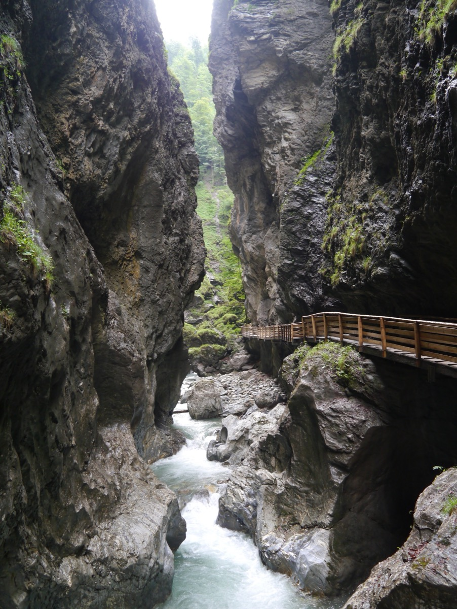
Liechtensteinklamm – nejlepší v okolí
Nejhlubší soutěska v Alpách – stěny až 300 m, šířka pár metrů, 1 km lávek, vodopád na konci. 2. nejkrásnější místo Rakouska 2022.
Se SalzburgerLand Card: zdarma!
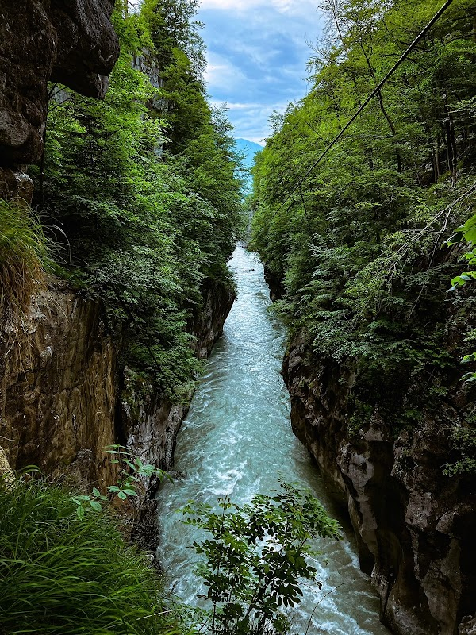
Salzachöfen – zdarma, méně turistů
Kaňon hloubky 90 m, kde Salzach prořízla vápencové skály. Kolébka alpského raftingu. Turistická stezka se schody. Autentičtější a bez front.
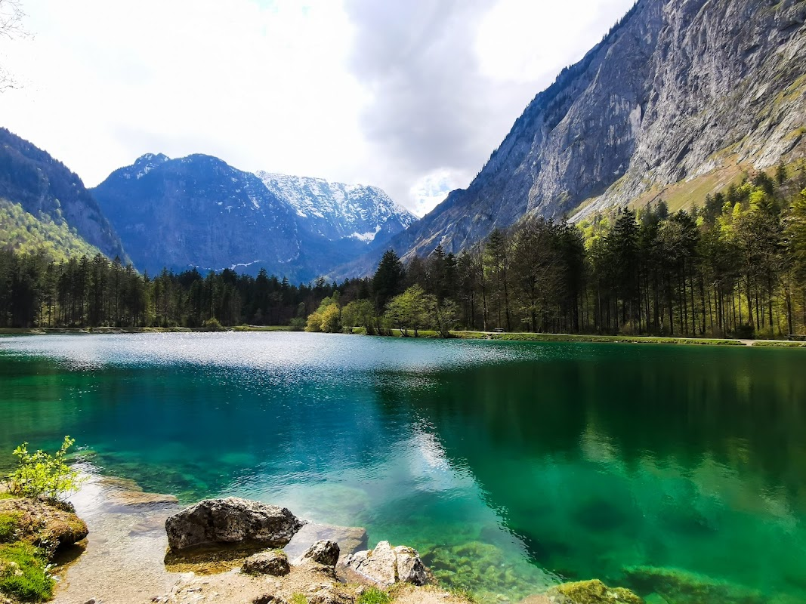
Bluntautal – vhodné pro kočárek! 🌟
Romantické 4km údolí, lesní cesta podél potoka, 2 horská jezírka, hostinec Bärenhütte. Minimální převýšení – ideální s kočárkem nebo malým dítětem.
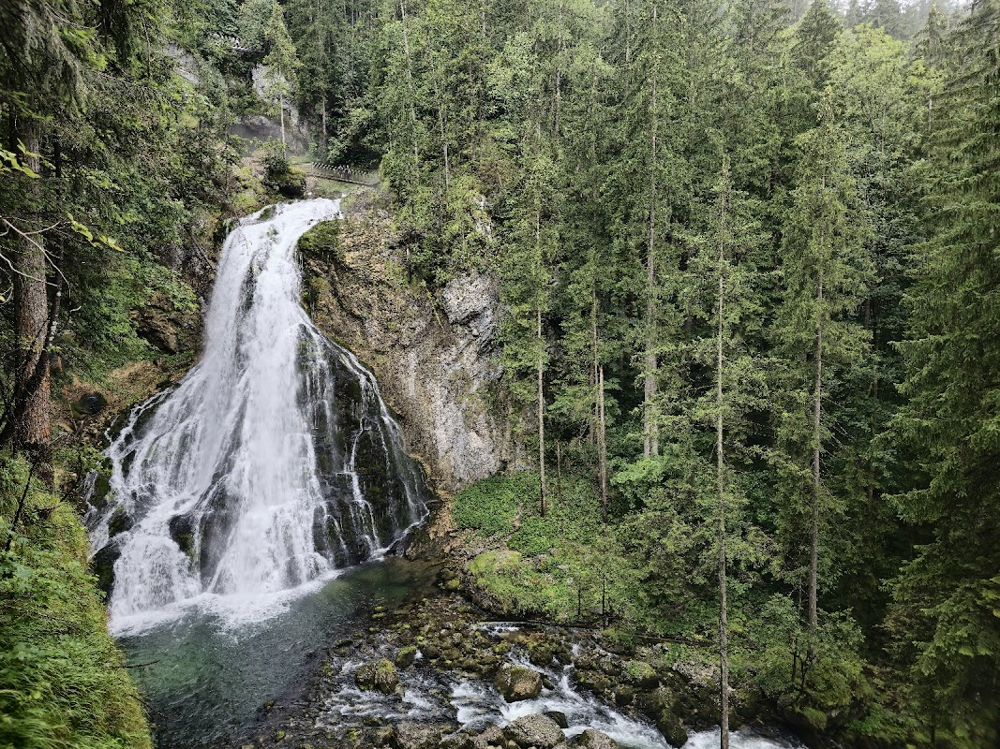
Gollinger Wasserfall – 100m vodopád
Přirozený krasový vodopád, přístupný od roku 1805. Cesta přes skalní průchody. Kombinovat s Bluntautal – oba jsou v Gollingu!
📍 Mapa📊 Srovnání na první pohled
| Soutěska | Km | Vstup | Kočárek | Náročnost | Hodnocení |
|---|---|---|---|---|---|
| Liechtensteinklamm | 28 | €16/os. | ❌ | ⭐⭐⭐ | ⭐⭐⭐⭐⭐ |
| Salzachöfen | 35 | zdarma | ❌ | ⭐⭐ | ⭐⭐⭐⭐ |
| Bluntautal | 42 | volný | ✅ | ⭐ | ⭐⭐⭐⭐ |
| Gollinger Wasserfall | 42 | ~€4/os. | ❌ | ⭐⭐ | ⭐⭐⭐ |
🏔️ Jeskyně, ledovce & vodopády
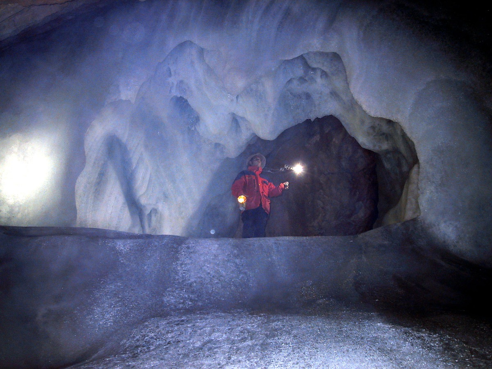
🧊 Eisriesenwelt – Největší ledová jeskyně světa
42 km ledových chodeb, teplota pod 0°C, 1400 schodů, průvodce s karbidovou lampou. Od parkoviště celkem 3 hodiny (20 min pěšky + lanovka + 20 min + 1h jeskyně).
Se SalzburgerLand Card: zdarma! (úspora €194)
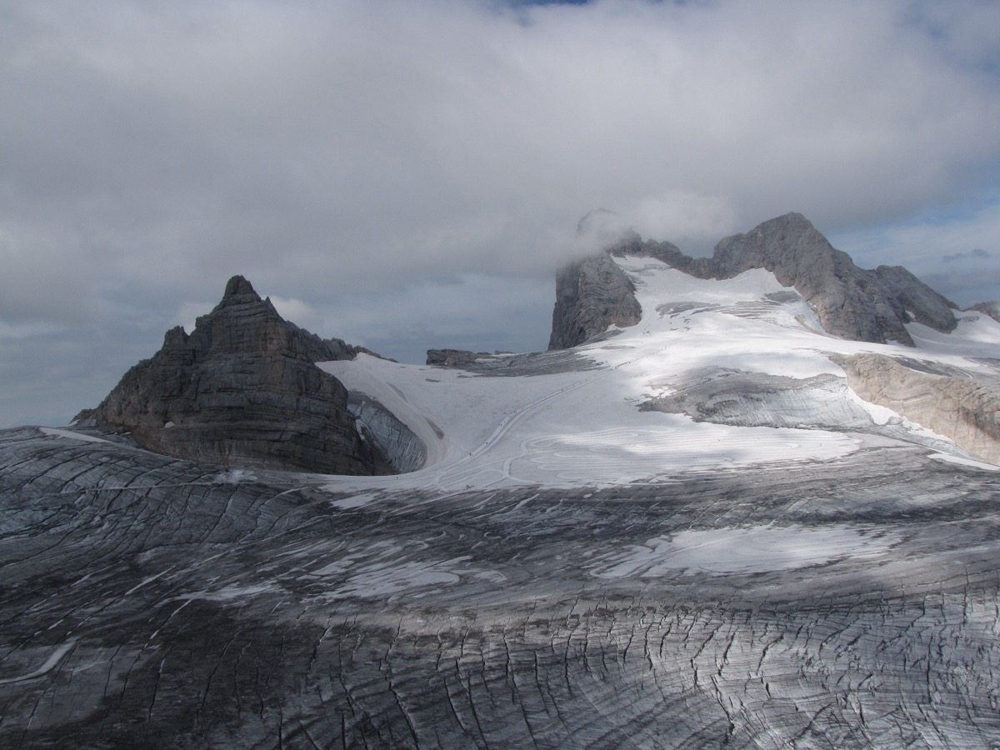
🏔️ Dachstein Gletscher + Eispalast + Hängebrücke
Gondola na 2700m (6 min), Eispalast uvnitř ledovce (-2 až -5°C), visutý most 400m nad propastí, výhled na 30 třítisícovek.
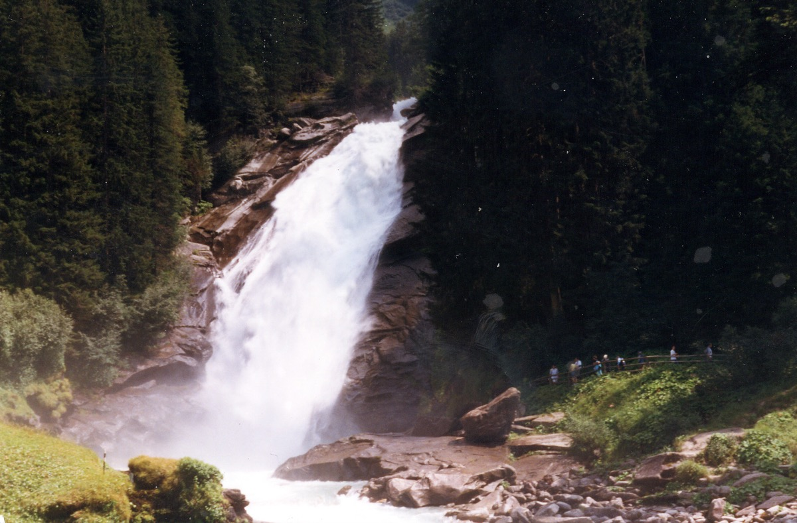
💧 Krimmler Wasserfälle – Nejvyšší vodopády Rakouska
380m vysoké vodopády ve 3 stupních. Ke spodnímu stupni kočárek OK (15 min od parkoviště). Celá trasa: nosítko, 4km, 2–3 hodiny. Pláštěnka povinná!
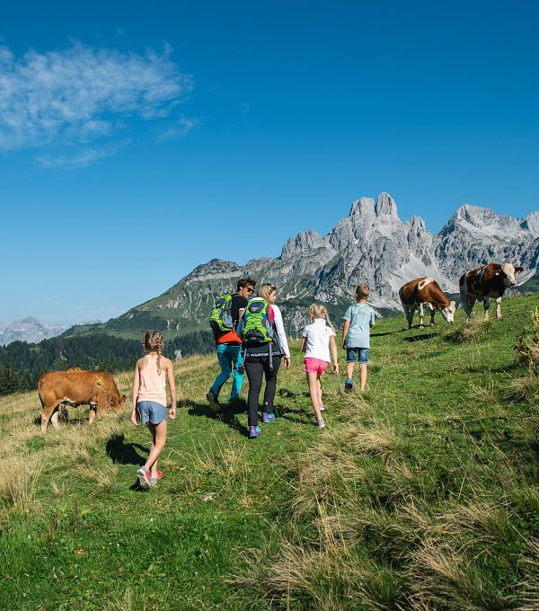
🦫 Bachlalm + Svišti (Murmeltiere)
Alpské jezírko, kolonie 30+ divokých svišťů – nejsou plachí! Murmeltierexpress shuttle z Filzmoos. Ideální pro první nebo poslední den.
📍 Mapa🥾 Túry a almy
🥾 5 Hütten Weg – Der Klassiker (přímo z Filzmoos!)
Ikonická turistická trasa z Filzmoos přes 5 alm (Hütten). Každá alm = jídlo, odpočinek, káva nebo pivo. Na konci trasy bus zpět do Filzmoos.
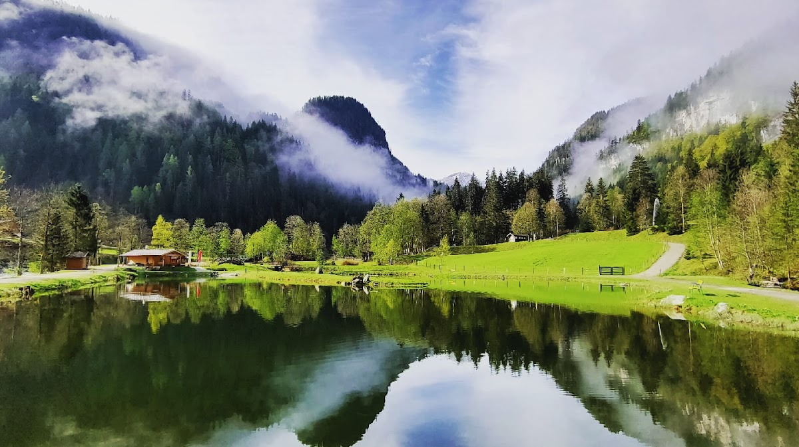
🦌 Wild- und Freizeitpark Untertauern – pro dítě TOP!
Park divokých zvířat u Untertauern – jeleni, mufloni, kozy, svišti, divočáci. Nový dětský hřiště s skluzavkami, vodní hřiště, Aussichtsturm, ponyreiten. Restaurace Wildparkstüberl přímo v parku. Skvělé pro dítě 1,5 roku!
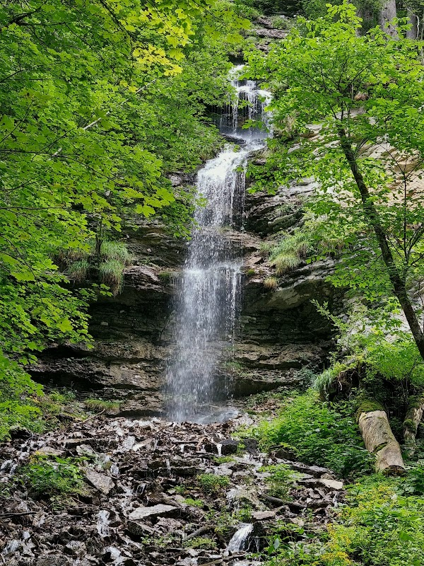
💧 Wasserfall u Gosausee
Vodopád přímo u Gosauseestraße, kratká zastávka cestou na Gosausee. Upozornění z recenzí: V létě bývá slabý průtok vody – nejlepší na jaře nebo po dešti.
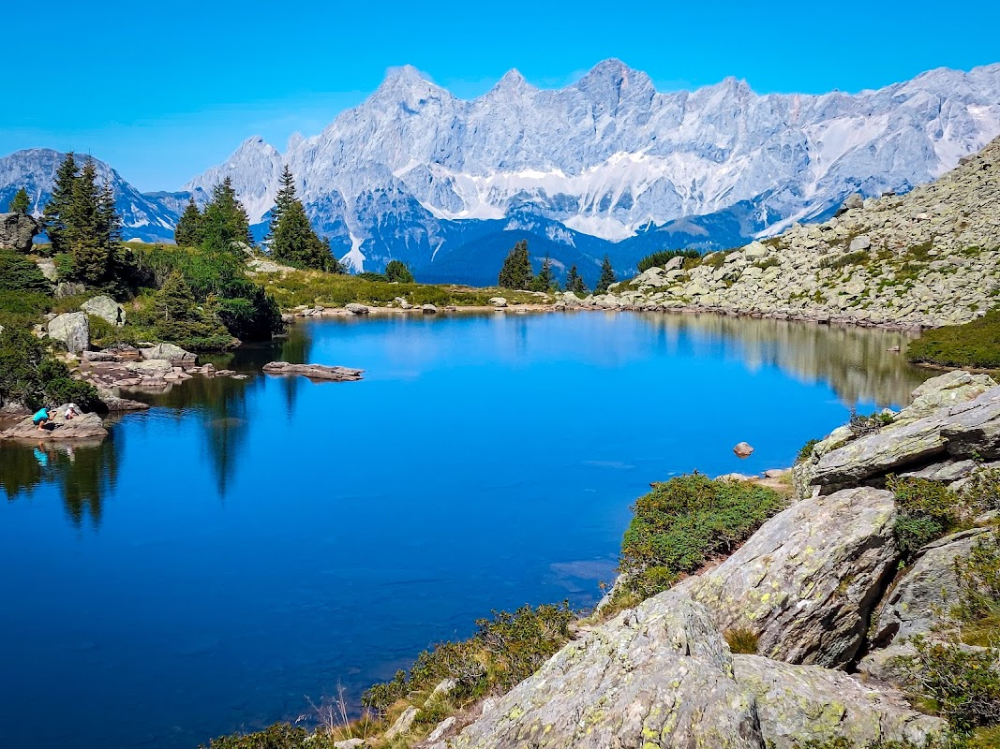
🏞️ Spiegelsee – horské jezírko u Schladmingu
Krásné alpské jezírko nad Schladmingem. Okružní túra cca 3 hodiny, cestou výhledy na Dachstein a zvířata. Výstup je strmý – doporučeno nosítko pro dítě.
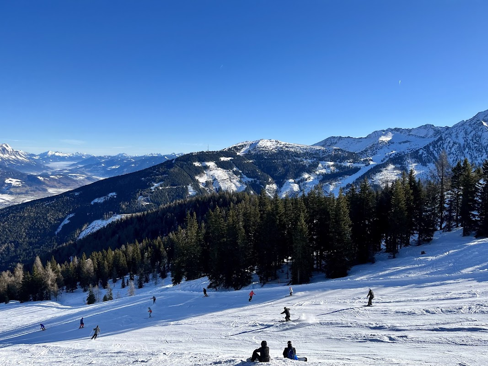
🏔️ Planai – lanovka a panorama u Schladmingu
Lyžařský areál u Schladmingu, v létě výborný výchozí bod pro túry. Gondola na vrchol, odtud výhledy na Dachstein a Ennstal, turistické trasy na almy a Spiegelsee. Kombinovat se Spiegelsee jako jeden výlet!
🗺️ Přehled dalších míst v okolí
🌊 Další soutěsky
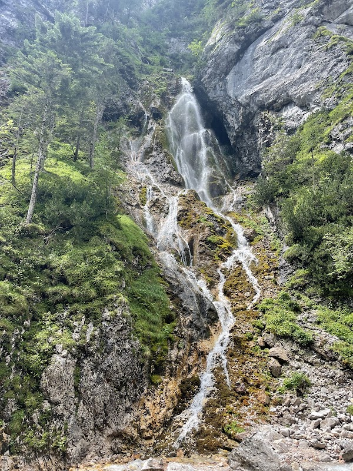
🌊 Silberkarklamm
Úzká soutěska u Ramsau am Dachstein — vodopád, dřevěné lávky a 3 via ferrata trasy podél ní. 1 hodina procházky, vhodné pro děti. Volné parkoviště vpravo od vstupu.
🌊 Dachserfall
Vodopád u Abtenau přístupný krátkou procházkou od parkoviště. U vstupu Kneipp koupaliště — osvěžení nohou v ledové vodě. Klidné, málo turistů.
📍 Mapa🌊 Tauglklamm
Soutěska u Kuchlu, volný vstup. Méně turistická alternativa k Liechtensteinklamm.
📍 Mapa🌊 Donnersbachklamm
Soutěska v regionu Schladming-Dachstein. Divoká příroda, méně navštívená.
📍 Mapa🌊 Gesäuse NP – Erlebniszentrum Weidendom
Národní park Gesäuse — soutěska řeky Enns s dramatickými vápencovými skalami. Erlebniszentrum s interaktivními expozicemi. Kombinovat s výletem do Admontu (klášter s největší klášterní knihovnou světa).
📍 Mapa💧 Vodopády
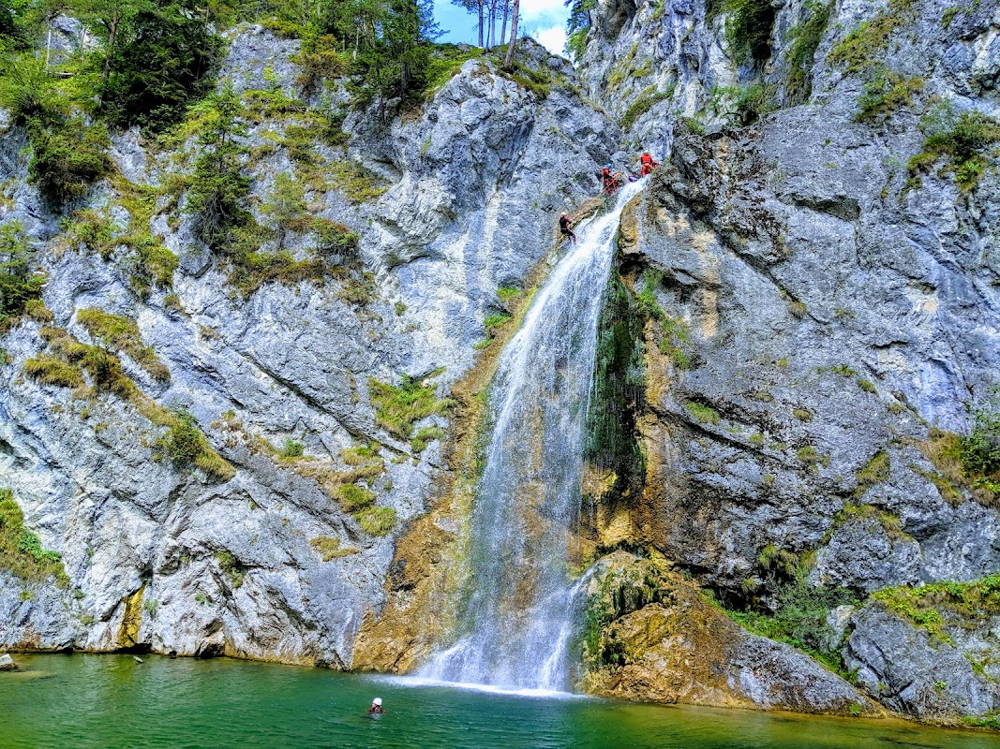
💧 Salza Wasserfall
Jeden z nejimpozantnějších vodopádů Štýrska, u obce Salza. Přístupný krátkou procházkou. Velmi oblíbený — přijít ráno.
📍 Mapa💧 Riesachfälle + Riesachsee
Nejvyšší vodopády Štýrska (70m). Trasa Alpinsteig Höll: via ferrata sekce, mosty, žebříky — spektakulární! Nahoře jezero Riesachsee s chatou Gföller Alm. Pro kočárek: alternativní cesta č. 777 přímo k jezeru bez via ferrata.
🗻 Lanovky & vrcholy
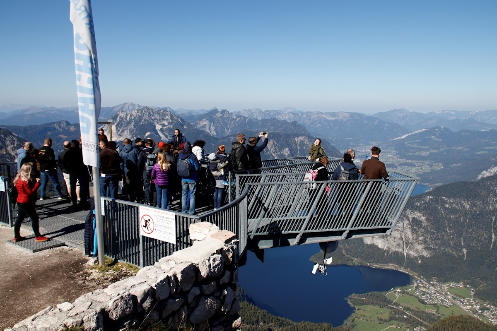
🗻 Krippenstein – 5 Fingers
Vrchol nad Hallstattem s 5 Fingers vyhlídkovou plošinou. Lanovka z Obertraun (3 sekce). Po cestě ledová jeskyně a Mamutí jeskyně. Světové dědictví Spiral Viewpoint — zajímavější než 5 Fingers samotné.
🗻 Hochwurzen
Lanovka u Schladmingu s výhledy na Dachstein. V létě skvělý výchozí bod túr. Kombinovat s Planai a Spiegelsee jako celý den.
📍 Mapa🗻 Stoderzinken (2048 m)
Lehce dostupný vrchol s nečekaně krásnými výhledy. U vrcholu kaple Friedenskircherl vytesaná do skály — zazvoněte zvonem pro štěstí! Výhledy na Schladminger Tauern.
📍 Mapa
🗻 Tauplitzalm
Alpská planina s řetězem jezer — letní turistika i koupání. Klidnější než Gosausee, méně turistů. Ideální na kočárku kolem jezer.
📍 Mapa🏍️ Sölkpass
Horský průsmyk přes údolí Sölktäler — úzká silnička, nulový provoz, dramatická krajina. Ideální pro motorkáře jako alternativa k přetíženým trasám. Kombinovat se Sölktäler přírodním parkem.
📍 Mapa🦌 Zvířata & parky
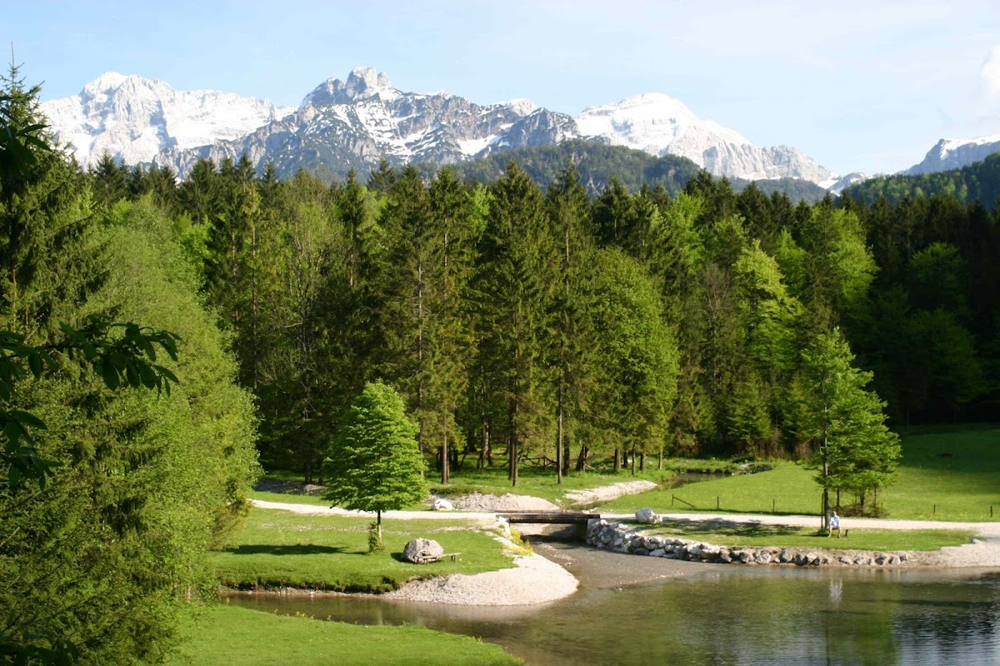
🦌 Cumberland Wildpark Grünau
60 hektarů parku divokých zvířat v lese — jeleni, daňci, rysi, medvědi, divočáci, vlci. Zvířata v přirozeném prostředí. Restaurace přímo v parku. Skvělé pro dítě v každém věku.
📍 Mapa 🌐 Web🏞️ Jezera & procházky
🏞️ Seewaldsee – okruh kolem jezera
Klidné jezero s okruhovou trasou vhodnou pro kočárek. Koupání v létě, málo turistů. Perfektní výlet na procházku s dítětem.
📍 Mapa🌸 Iriswiese-Trautenfels
Louka s divokými kosatci pod hradem Trautenfels. Unikátní přírodní podívaná, vhodná na kočárek. V sezóně kvetení je to nezapomenutelné.
📍 Mapa⭐ Ameisstein
Turistická atrakce u Grünau im Almtal s unikátním výhledem. Kombinovat s Cumberland Wildparkem — obojí je ve stejné oblasti.
📍 Mapa🏍️ Motorkářské trasy
Trasa A: Radstädter Tauernpass – doporučená!
→ Mauterndorf → Tamsweg (Lungau) → Untertauern → Filzmoos
Alpský průsmyk, serpentiny, Lungau = nejslunečnější kraj Rakouska. Kombinovat s Burg Mauterndorf.
Trasa B: Hochkönig okruh
Výhledy na Hochkönig 2941m. Kombinovat s Eisriesenwelt nebo Hohenwerfen (oba u Werfenu).
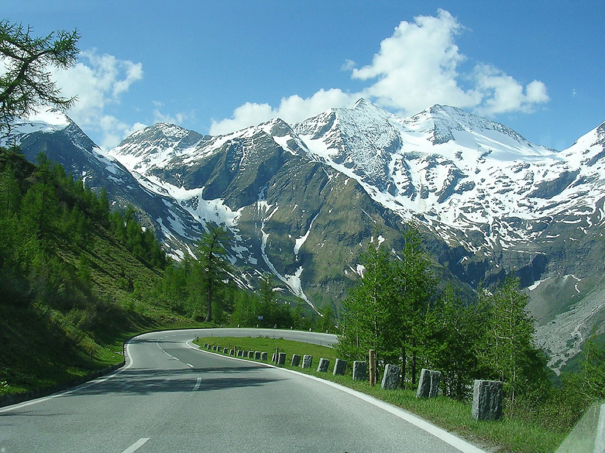
Trasa C: Grossglockner – vrcholný zážitek
→ Kaiser-Franz-Josefs-Höhe (ledovec Pasterze) → zpět nebo přes Heiligenblut
48km panoramatické silnice, 36 serpentin. Pro 3 motorky + auto: 3×€36,50 + €46,50 = €156 celkem na vstup.
🌐 Ceny + stav silniceTrasa D: Gerlospass + Zillertal
Méně přetíženější než Grossglockner, krásné výhledy, Zillertal údolí.
Trasa E: Obertauern okruh
⛏️ Solné doly a zajímavé podzemí
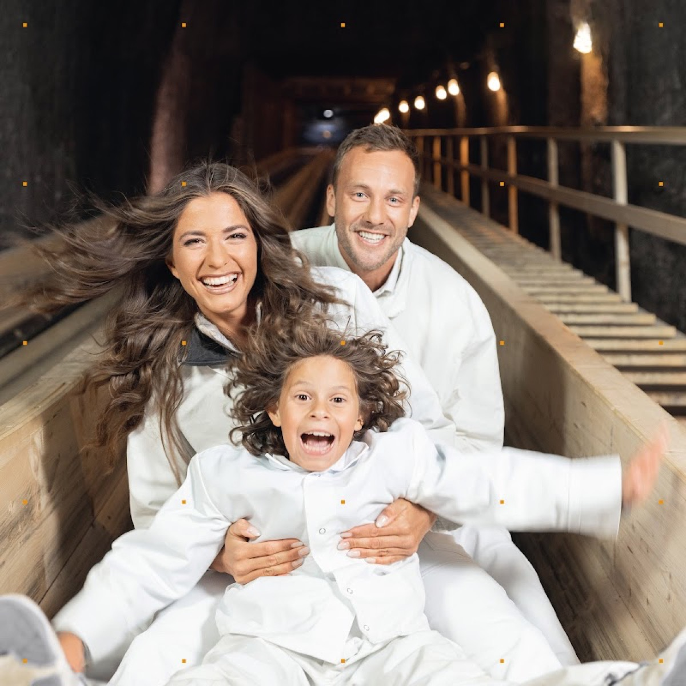
🧂 Salzwelten – Solné doly (Bad Dürrnberg nebo Hallstatt)
Podzemní solný důl s tunely, podzemním jezerem a skluzavkami! Hallstatt navíc jako UNESCO vesnička u jezera. Přesně ta věc co doma nezažijete.
⛏️ Bergwerk Schwaz – Středověké stříbrné doly (Tyrolsko)
Největší středověký stříbrný důl světa, průjezd vláčkem. Delší výlet – kombinovat s Gerlospassem nebo Zillertálem.
🌐 Web🐄 Farmy, sýry & restaurace
🛒 Ab Hof prodejny přímo ve Filzmoos
| Místo | Adresa | Otevírací doba | Co nabízí |
|---|---|---|---|
| Nestlerhof 🌟 | Nestlerweg 10 (7 min od vašeho ubytování!) | do 19:00 | Vejce, mléko, sýr ab hof |
| Selbstbedienungs-Hofladen Kirchgasshof | Kirchgassweg 1 | do 22:00! | Samoobslužný hofladen, otevřeno skoro pořád |
| Wexlerhof | Wexlerweg 2 | zavolat | Ab hof prodej, +43 664 3828200 |
| Bauernmarkt Kirchgasshof | Kirchgassweg 1 | sezónně (ověřit) | Farmářský trh |
🧀 Almy s Brettljause a domácími sýry
| Alm | Výška | Přístup | Co dostat |
|---|---|---|---|
| Kirchgasshütte / Aualm | 1366 m | Shuttle nebo pěšky 1h | Brettljause, Kaspressknödel, Kaiserschmarrn |
| Oberhofalm | 1268 m | Pěšky 45 min | Brettljause, čerstvé mléko, rodinná farma |
| Unterhofalm | 1280 m | Pěšky 30 min | Almjause, domácí produkty |
| Schwaigalm | 1358 m | Pěšky 1h | Käsesnitte, Jause, alpský sýr |
| Hofpürglhütte | 1705 m | Pěšky 2,5h (nebo 45 min z Aualm) | Domácí jídla, horská atmosféra – jen hotovost! |
Ve Filzmoos
| Restaurace | Cena/os. | Specialita | Poznámka |
|---|---|---|---|
| ☕ Café Hirschenau | €5–15 | Dorty, snídaně, káva | Nejlepší kavárna ve Filzmoos |
| 🍺 De Hiatabuam | €12–22 | Lokální kuchyně, Schnitzel | Oblíbené u místních |
| 🏘️ Gasthof Fiakerwirt | €12–20 | Guláš, Schnitzel | Klasický gasthof |
| 🍔 MeiZeit Lodge | €15–25 | Burgery, steaky | Otevřeno do 22h, moderní |
| 🍝 Mamma Norica | €15–25 | Italsko-alpská kuchyně | Rodinná atmosféra |
| 🥩 Panorama Reithof | €25–40 | Steaky, výhled na Bischofsmütze | Nejhezčí výhled |
☔ Program na deštivý den
| Atrakce | Vzdálenost | Cena skupina | Proč je OK za deště |
|---|---|---|---|
| 🧊 Eisriesenwelt | 30 km | ~€194 / zdarma s kartou | Pod zemí, vždy mráz a nádhera |
| 🧂 Salzwelten Bad Dürrnberg | 55 km | ~€122 / zdarma s kartou | Tunely, skluzavky, podzemní jezero |
| 🏔️ Dachstein Eispalast | 15 km | ~€67 (jen atrakce) | Gondola + ledový palác |
| 🏙️ Salzburg Haus der Natur | 80 km | ~€60 | Příroda, vesmír, reptilie – ne jen historie |
| 🏰 Burg Mauterndorf | 35 km | ~€45 | Středověký hrad, interíér |
| 🏺 Dachstein-Destillerie | 10 km | levné / zdarma | Palírna alpských destilátů |
💳 Slevové karty
SalzburgerLand Card (6 dní) – €103/dospělý, €52/dítě
Zahrnuje zdarma: Eisriesenwelt (~€194) + Hohenwerfen (~€75) + Liechtensteinklamm (~€73) + Krimmler Wasserfälle (~€25) + Salzwelten (~€122) + Zoo Salzburg + Festung + ...
✅ Vyplatí se pokud navštívíte alespoň 5 atrakcí ze seznamu + výlet do Salzburgu.
❌ Nevyplatí se pokud jen 2–3 atrakce.
Filzmoos Sommer Card – pravděpodobně zdarma pro hosty
Slevy na místní lanovky, turistické autobusy, atrakce v okolí Filzmoos. Zeptat se na recepci Haus Dachstein ihned po příjezdu!
AlmCard Filzmoos – slevy na almách
Zlevněné nebo fixní ceny na jídlo na 20+ almách a hüttách. Ověřit cenu u Filzmoos Tourismus (Dorfstraße 12).
🌐 Info📅 Navrhovaný program 5 dní
👶 Tipy pro cestování s dítětem 1,5 roku
Co vzít s sebou
- ✅ Ergonomické nosítko/šátek – nutné pro soutěsky a jeskyně
- ✅ Terénní kočárek – pro Bluntautal, Salzburg Zoo, Filzmoos vesnice
- ✅ Zimní oblečení pro dítě (kombinéza, čepice, rukavice) – Eisriesenwelt + Dachstein Eispalast jsou pod 0°C!
- ✅ Pláštěnka pro dítě – Krimmler, Liechtensteinklamm, Salzachöfen
- ✅ Opalovací krém SPF50+ – ve výšce 2500m je UV 2× silnější
Kočárek vs nosítko
| Místo | Kočárek | Nosítko |
|---|---|---|
| Bluntautal | ✅ celá trasa | ✅ |
| Bachlalm / Filzmoos vesnice | ✅ | ✅ |
| Salzburg Zoo Hellbrunn | ✅ | ✅ |
| Grossglockner parkoviště | ✅ | ✅ |
| Liechtensteinklamm | ❌ | ✅ nutné! |
| Eisriesenwelt | ❌ | ✅ + zimní oblečení! |
| Dachstein Eispalast | ❌ | ✅ + zimní oblečení! |
| Burg Hohenwerfen | ❌ | ✅ |
Kde bude dítě nejvíce nadšené
- 🦫 Bachlalm – svišti živě, jezírko, klid
- 🦅 Burg Hohenwerfen – sokolníci s dravými ptáky
- 🦒 Zoo Hellbrunn Salzburg – zvířata, kočárek OK
- 💧 Krimmler (spodní stupeň) – obrovský vodopád, nezapomenutelný zvuk